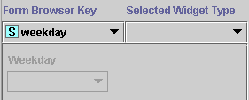
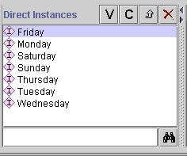

The Browser Key menu allows you to choose the browser key, that is the slot that is used to identify the different instances when they are displayed in a list. For example, the form for Prototype_Newspaper has the browser key set to weekday. This means that, in the Direct Instances Pane, the different instances are listed by the value in the weekday field.
 
If you do not select a slot to use as a browser key, Protégé-2000 uses a default key, <instance name>, such as newspaper_0017. It is usually helpful to set a browser key.
Browser keys are inherited from the parent class.
Next: The Widget Type Menu